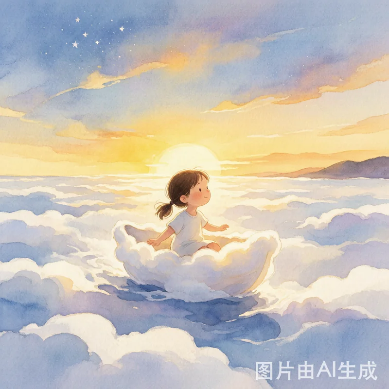
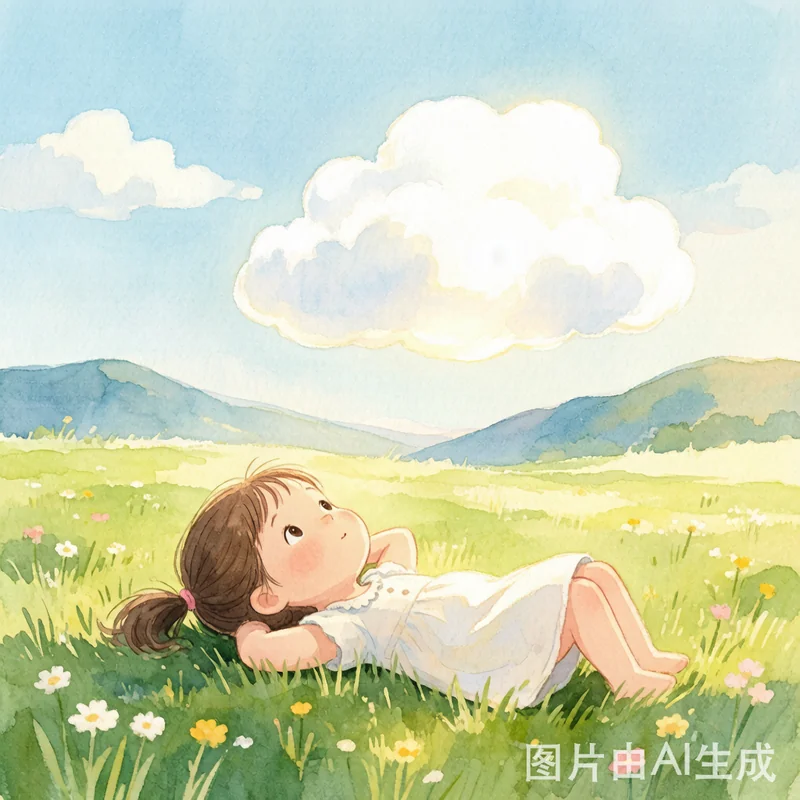
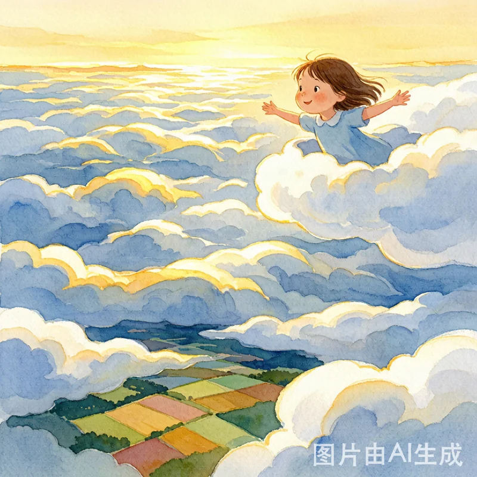
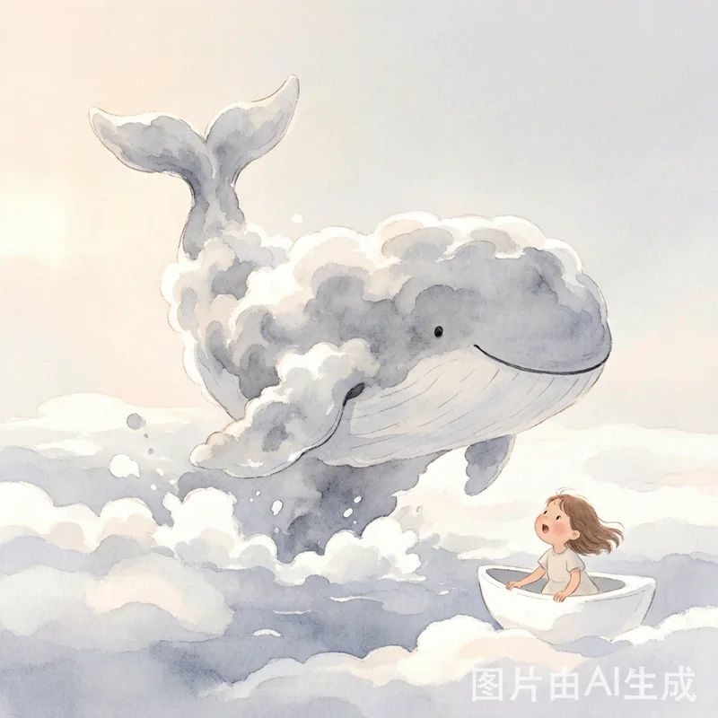
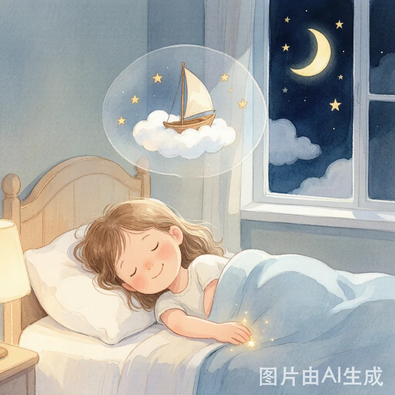

一 场 关 于 勇 气 与 星 星 的 旅 行

在一个被群山环抱的小村庄里，住着一个叫小朵的小女孩。小朵最喜欢的事情，就是躺在草地上看天上的云。
有一天傍晚，天边飘来一朵特别特别白的云。它比棉花糖还软，比雪还亮，慢慢地、慢慢地，落在了小朵家的屋顶上。
小朵好奇地爬上屋顶，发现这朵云竟然变成了一艘小船的形状！船头翘翘的，船身软绵绵的，还有两片小云朵当船桨。
"你……你是云朵小船吗？"小朵轻轻摸了摸船身，软软的，暖暖的。云朵小船微微晃了晃，好像在说："上来吧。"

小朵鼓起勇气，跳了上去。哇！云朵小船轻轻地飘了起来，越飞越高。村庄变小了，群山变小了，整个大地变成了一块五彩的拼图。
好大好大的云海呀！白色的云朵像翻滚的波浪，一层叠着一层，一直铺到天边。金色的夕阳给云海镶上了一道亮亮的金边，美得像一幅画。

忽然，前方的云朵拱起一个大大的弧形——一条巨大的云朵鲸鱼从云海里跃了出来！它的身体是银灰色的，尾巴甩出一道漂亮的弧线。
"我要去云海尽头，那里有通往星星的路。"鲸鱼说完，摆摆尾巴，潜入了云海，只留下一串圆圆的云泡泡。
小朵的眼睛亮了。通往星星的路！她也想去！
可是，云海并不是一直那么温柔。天渐渐暗了下来，前方出现了一大片黑压压的暴风云。乌云翻滚着，闪电在云层里穿来穿去。
"我……我该怎么办？"小朵的声音在发抖。就在她快要哭出来的时候，她想起了妈妈常说的那句话："害怕的时候，就唱一首歌吧。"
小朵深吸一口气，开始小声唱歌："小云朵，轻轻飘，带着我去找星星……"
奇妙的事情发生了！云朵小船开始发光了，柔和的白光从船身散发出来。暴风云好像被这温柔的光安抚了，慢慢散开了一条通道。
当最后一片乌云散去，小朵眼前豁然开朗——满天繁星！数不清的星星密密麻麻地铺满了天空，有的金色，有的蓝色，有的粉色，像一颗颗彩色的糖果洒在黑丝绒上。
她伸出小手，轻轻碰了碰最近的一颗星星。那颗星星是暖的，像捧着一小团阳光。

不知过了多久，星星们渐渐飞回了天上。云朵小船载着小朵，慢慢地、轻轻地往回飞。当小朵回到屋顶的时候，手心里还留着一点星星的余温。
那一晚，小朵睡得特别香。她梦见自己又乘着云朵小船，在星星中间飞呀飞。因为她知道，勇敢的心，能带你去任何地方。